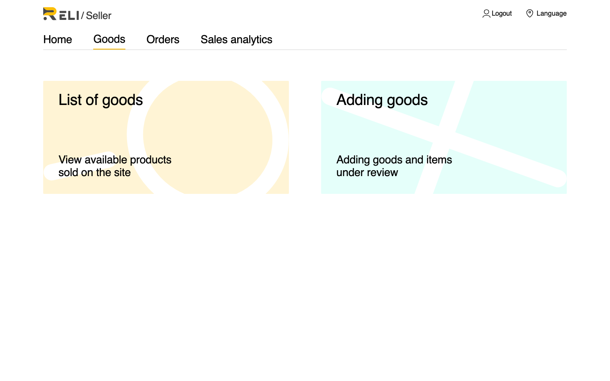
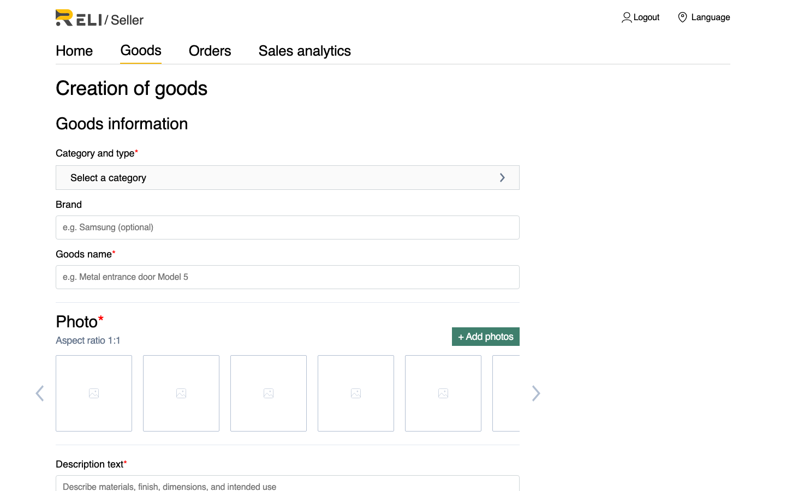
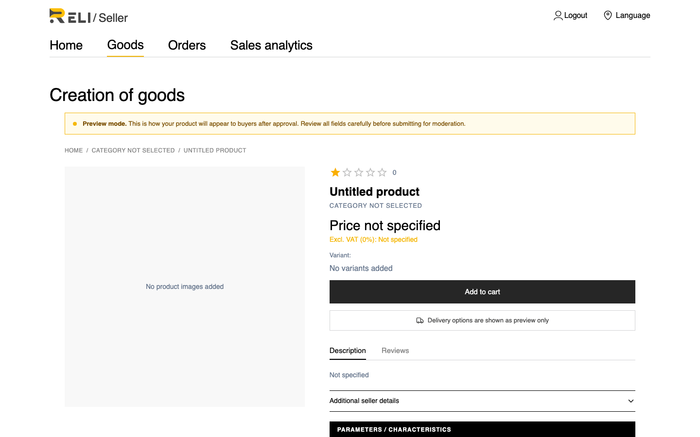
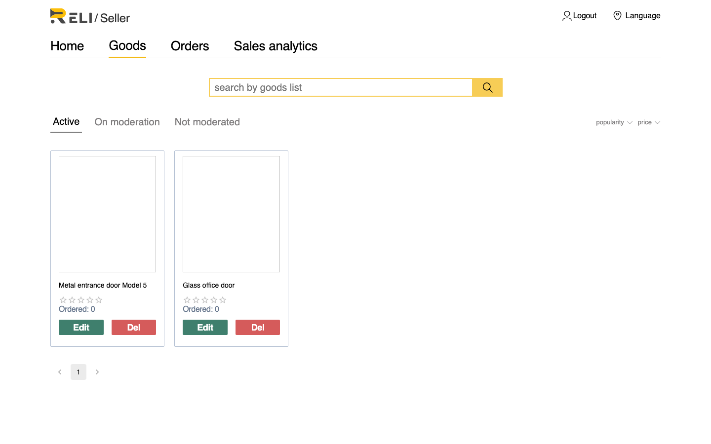

Как добавить товар в каталог после одобрения заявки продавца. Товары проходят модерацию перед публикацией.
После входа откройте раздел Goods. На стартовой странице доступны два действия:

Нажмите Adding goods или перейдите на https://reli.one/seller/seller-create.
Часть полей одинакова для всех товаров. Другая часть — атрибуты категории — подтягивается автоматически после выбора категории и может отличаться для разных категорий и подкатегорий.
| Поле | Описание |
|---|---|
| Category | Категория каталога. Обычно выбирается конечная (листовая) категория; в некоторых ветках допускается товар и в родительской категории. |
| Goods name | Название товара |
| Description | Описание товара |
| Photo | Минимум одно изображение (JPG, PNG, WebP) |
| VAT rate, % | Ставка НДС. Если поле оставить пустым, система сохранит значение 0%. |
| Variant type name | Название типа варианта (например, «Size», «Color») |
| Variants | Минимум один вариант. Для каждого варианта обязательны: значение, цена, остаток на складе, вес упаковки и габариты (длина, ширина, высота) — для расчёта доставки. |
После выбора категории форма загружает схему атрибутов. В неё входят:
Обязательными для заполнения являются только поля, помеченные в схеме как required (типы: текст, число, да/нет, выбор из списка). Если для категории нет обязательных атрибутов, этот блок можно пропустить. При смене категории схема перезагружается — проверьте поля заново.

После заполнения формы нажмите кнопку Preview внизу страницы создания товара — откроется экран предпросмотра. Проверьте описание, характеристики, варианты и изображения, затем нажмите Sending for moderation.
Товар получит статус On moderation. Ориентировочное время модерации — около 24 часов. После одобрения товар появится в публичном каталоге со статусом Active.

| Проблема | Решение |
|---|---|
| Не загружается схема атрибутов категории | Перевыберите категорию или обновите страницу. Убедитесь, что выбрана категория, в которой разрешено создавать товары |
| Не видно нужных атрибутов | Атрибуты зависят от категории: часть задаётся в родительской категории, часть — в подкатегории. Выберите точную категорию товара |
| Кнопка отправки неактивна на предпросмотре | Проверьте обязательные атрибуты и варианты |
| Товар долго «On moderation» | Дождитесь решения модератора; при задержке > 48 ч — обратитесь в поддержку |
| Товар отклонён | Исправьте замечания и отправьте повторно через Edit |
Все ваши товары доступны на странице https://reli.one/seller/goods-list. Используйте вкладки для фильтрации:
Для каждого товара доступны действия Edit (редактирование) и Del (удаление). При редактировании одобренного товара его статус снова меняется на Pending — товар временно исчезает из каталога до повторной модерации.
